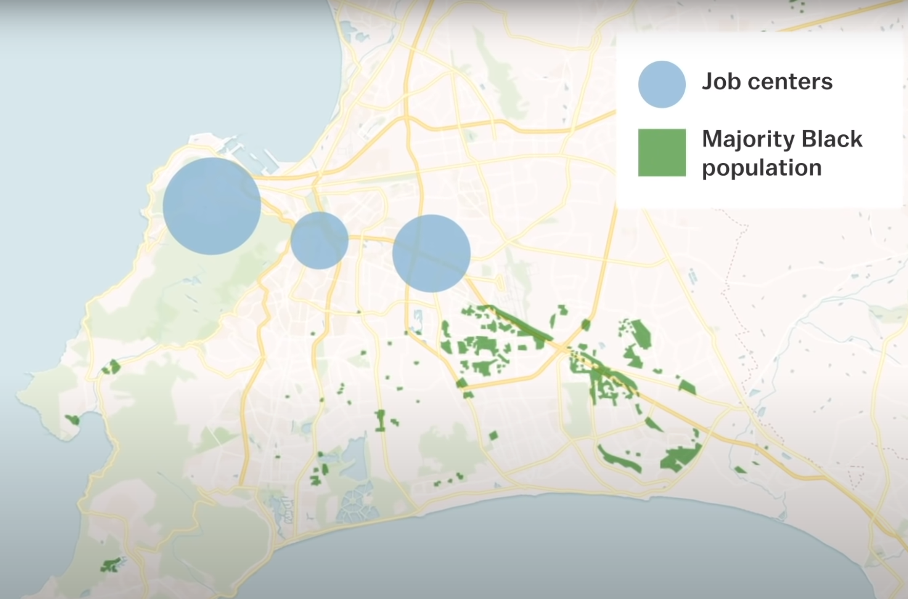

Over 76,000 Black South Africans were imprisoned under the racist institution of apartheid in 1992. Each icon represents one incarcerated person
(about this page)
scroll down
The legacy of apartheid in South Africa has led to insurmountable inequalities among Black and White citizens of the country. Here are the facts ...
Apartheid was a system of oppression implemented by white colonialists/settlers from 1948 until 1994 (15,727 days). It had a lasting legacy of wealth inequalities and systems of segregation that keep Black South Africans in poor communities.

The legacy does not end at wealth inequality. In the near end of apartheid, the racist policing system has produced massive disparity in incarceration rates among white and Black South Africans...
Reasonable people can disagree about who, precisely, belongs behind bars. But surely we need to do better than this.
Knowing all of this forces us to ask an uncomfortable question.
A better world is possible.
Here are some solutions
Since mass incarceration began, crime has risen and fallen with no correlation to incarceration rates.
In 1984, 1985, 1986, 1988, 1989, 1990, 1991, 2005, and 2006 we saw the violent crime rate and the incarceration rate increase simultaneously. In 2000, 2009, 2010, 2011, 2013, and 2014 we saw the violent crime rate and incarceration rate decrease simultaneously.
In 15 out of the 36 years shown in this chart, we observe the opposite effect that we would expect if incarceration was bringing down crime. To continue locking up this many people, we should require extremely strong evidence that it works. That evidence doesn't exist.
The first thing you need to understand is that mass incarceration hasn't made us any safer.
Lasting Legacy of Apartheid in South Africa is a project by Bernard Mulaw. Learn more here.